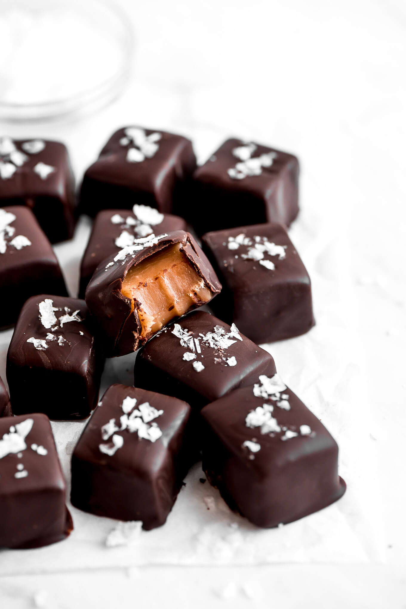

CHOCOWORLD
Chocolate is a preparation of roasted and ground cacao seeds that is made in the form of a liquid, paste, or in a block, which may also be used as a flavoring ingredient in other foodsThe seeds of the cacao tree have an intense bitter taste and must be fermented to develop the flavor. After fermentation, the beans are dried, cleaned, and roasted.
